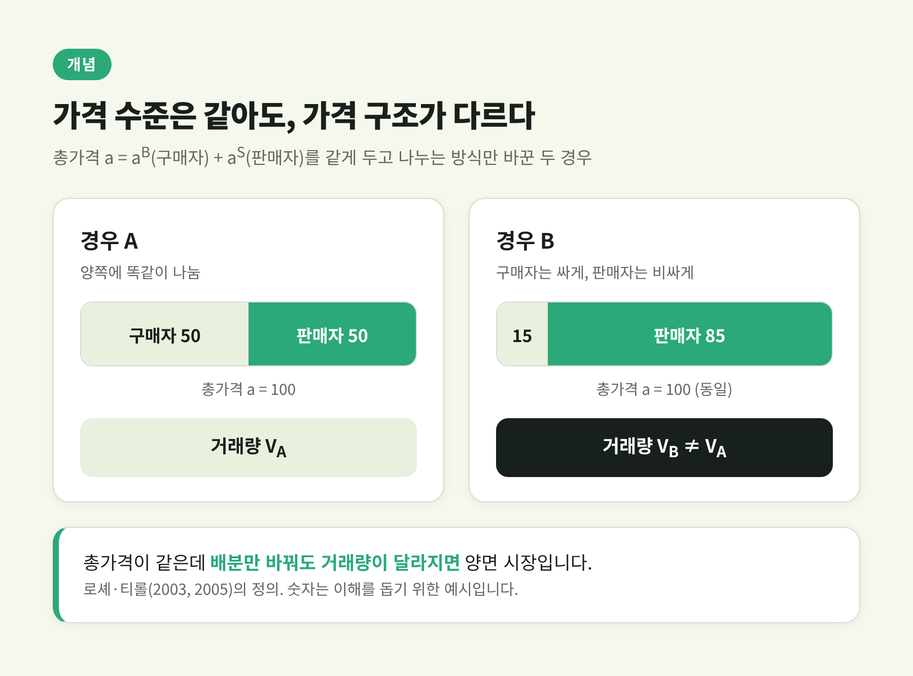
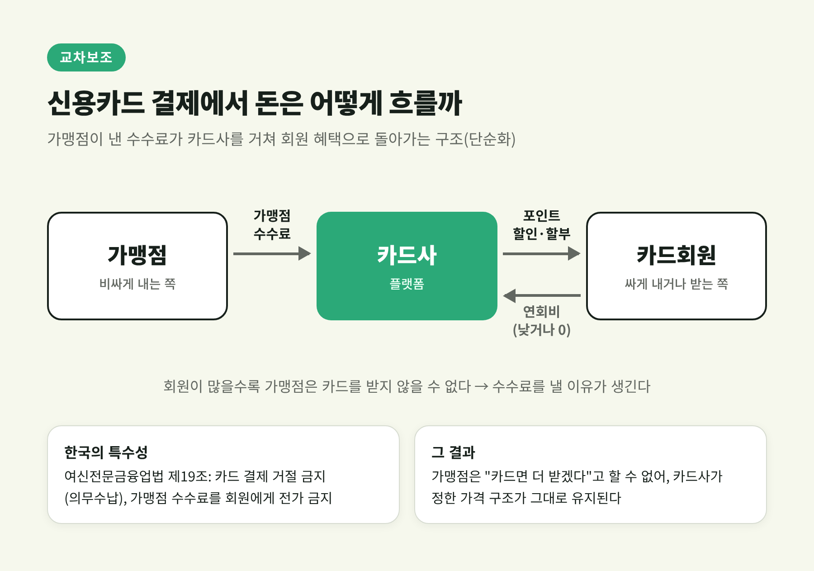
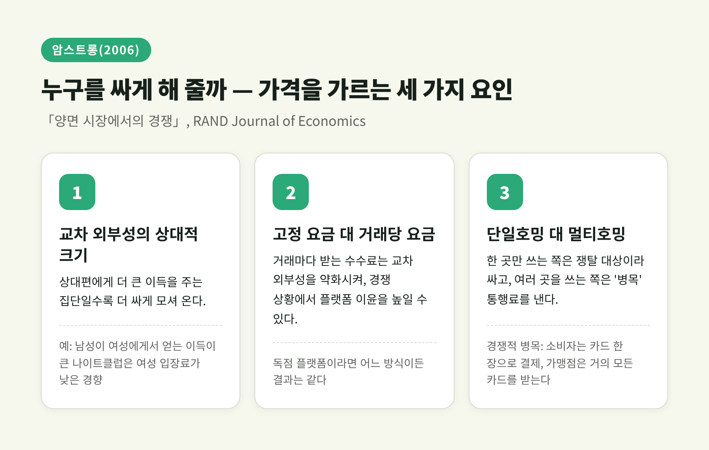
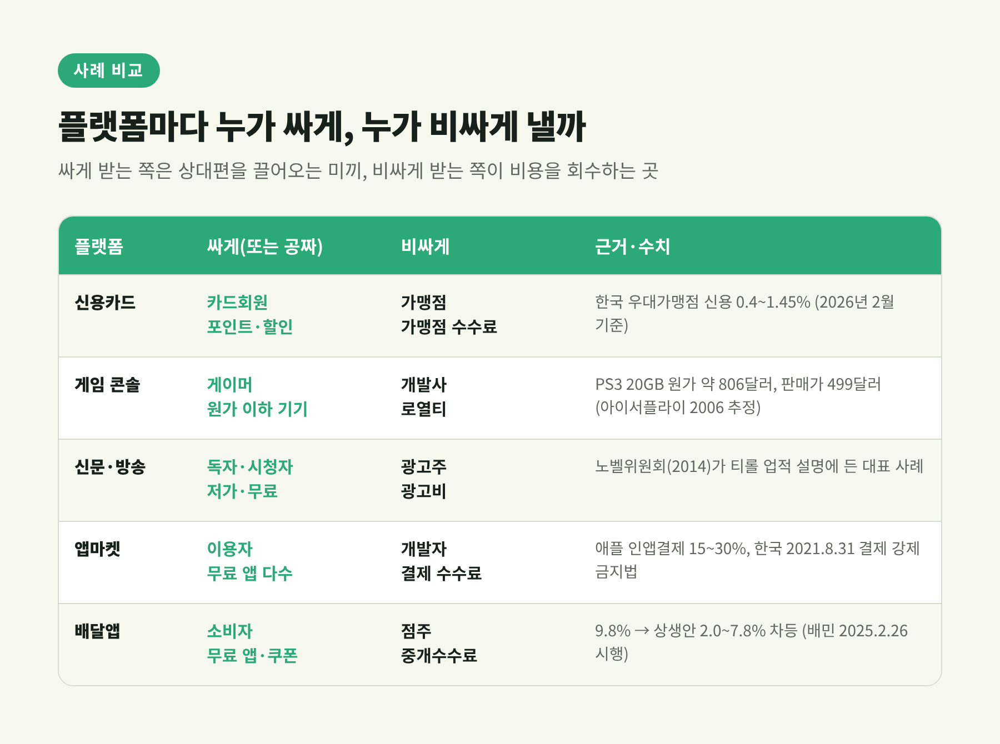
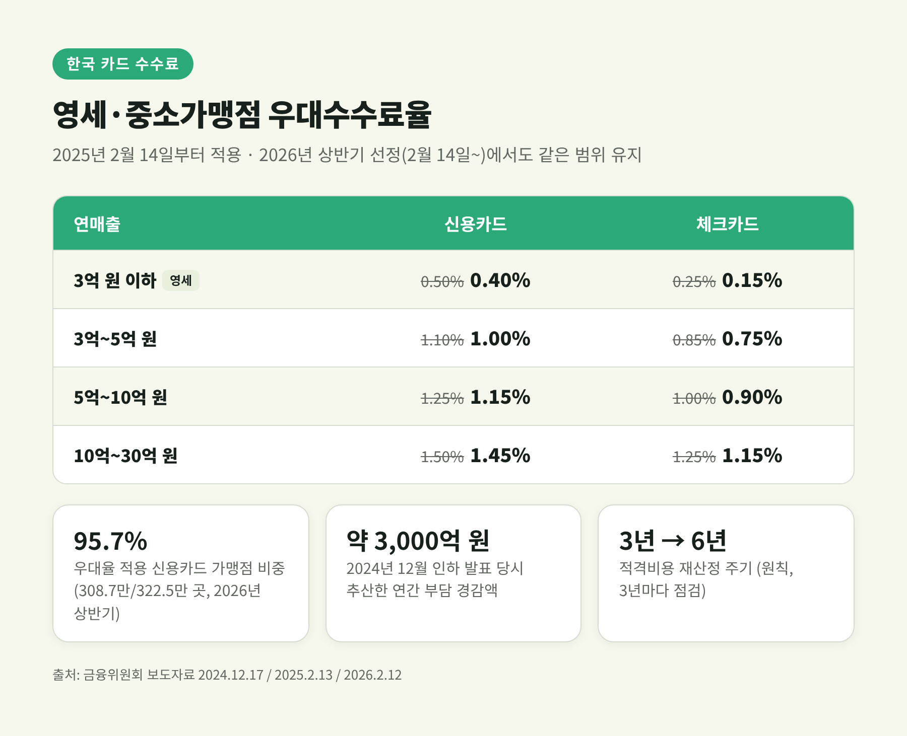
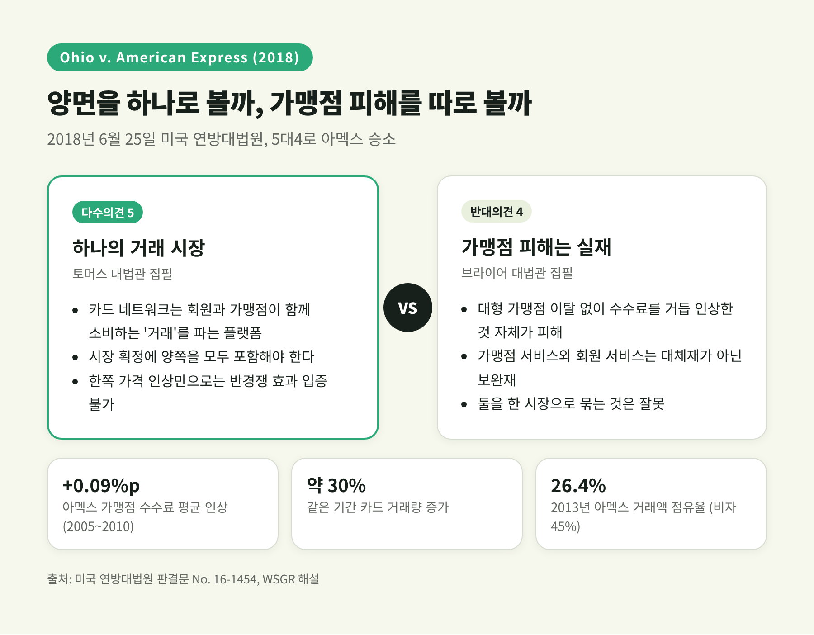

양면 시장 원리 — 카드사는 왜 가맹점에 수수료를 받고 소비자엔 포인트를 줄까

오늘은 양면 시장의 가격 구조를 정리해 보려 합니다. 카드사는 가맹점에서 수수료를 받고, 그 돈의 일부를 회원에게 포인트로 돌려줍니다. 게임기는 손해를 보고 팔고, 신문은 거의 공짜로 배달됩니다. 서로 달라 보이는 이 장면들은 하나의 원리로 설명됩니다.
세 줄 요약
- 양면 시장은 총가격이 같아도 '누구에게 얼마를 받느냐'에 따라 거래량이 달라지는 시장입니다.
- 플랫폼은 상대편을 더 많이 끌어오는 쪽을 싸게, 그 접근이 절실한 쪽을 비싸게 받습니다. 이것이 교차보조입니다.
- 그래서 한쪽 가격만 보고 판단하면 틀리기 쉽습니다. 2018년 미국 대법원의 아멕스 판결이 바로 이 쟁점을 다뤘습니다.
■ 가격의 '수준'보다 '구조'가 중요한 시장
양면 시장이라는 말을 경제학의 중심으로 끌어온 사람은 장샤를 로셰와 장 티롤입니다. 두 사람은 2003년 유럽경제학회지에 「양면 시장에서의 플랫폼 경쟁」을 발표했습니다. 티롤은 2014년 노벨 경제학상을 받았습니다.
정의는 생각보다 간단합니다. 플랫폼이 구매자에게 aB, 판매자에게 aS를 받는다고 해 봅시다. 둘을 더한 a가 총가격 수준입니다.
거래량이 이 총액에만 달려 있다면 평범한 단면 시장입니다. 그런데 총액은 그대로 둔 채 aB만 올리고 aS를 내렸더니 거래량이 달라진다면, 그때 양면 시장이 됩니다. 즉 '얼마를 받느냐'보다 '그 금액을 양쪽에 어떻게 나누느냐'가 결과를 좌우하는 시장입니다.

왜 나누는 방식이 중요할까요. 보통의 거래라면 누가 세금을 내든 결국 가격으로 조정됩니다. 경제학에서는 이를 코스 정리의 논리로 설명합니다. 당사자끼리 비용을 자유롭게 넘길 수 있다면 누구에게 청구하든 결과는 같다는 것입니다.
양면 시장에서는 이 재조정이 막혀 있습니다. 한국의 카드 결제가 좋은 예입니다. 여신전문금융업법 제19조는 가맹점이 카드 결제를 거절하거나 카드 고객을 불리하게 대우하는 것을 금지합니다. 가맹점 수수료를 회원에게 떠넘기는 것도 금지합니다. 가맹점은 "카드로 내시면 3% 더 받겠습니다"라고 말할 수 없습니다. 그래서 카드사가 정한 가격 구조가 그대로 살아남습니다.
■ 교차 네트워크 외부성과 교차보조
양면 시장의 두 집단은 서로를 원합니다. 가맹점이 많은 카드일수록 소비자에게 매력적이고, 회원이 많은 카드일수록 가맹점이 받고 싶어 합니다. 이처럼 한 집단의 규모가 다른 집단의 이익을 키우는 효과를 교차 네트워크 외부성이라 부릅니다.
여기서 교차보조가 나옵니다. 플랫폼은 한쪽에서 손해를 보더라도 그쪽을 많이 모아 둡니다. 그래야 다른 쪽에서 더 많이 받을 수 있기 때문입니다.
신용카드로 돌아가 보겠습니다. 카드사의 주요 수입원은 가맹점 수수료입니다. 그 돈의 일부가 포인트, 할인, 무이자 할부 같은 회원 혜택으로 돌아갑니다. 회원이 늘면 가맹점은 카드를 받지 않을 수 없게 되고, 수수료를 낼 이유가 생깁니다.

노벨위원회는 티롤의 업적을 설명하며 신문을 예로 들었습니다. 신문을 공짜로 나눠 주면 독자가 늘고, 독자가 많으면 광고주가 모여 제작비를 댑니다. 일반 시장이라면 원가 이하 판매는 경쟁자를 몰아내는 약탈적 가격으로 의심받습니다. 그러나 위원회는 이것이 모든 시장에서 그렇지는 않다고 짚었습니다. 한쪽의 낮은 가격이 다른 쪽 수입으로 메워지기 때문입니다.
■ 누구를 싸게 해 줄까 — 암스트롱의 세 가지 답
그렇다면 어느 쪽을 보조할지는 어떻게 정해질까요. 마크 암스트롱은 2006년 「양면 시장에서의 경쟁」에서 세 가지 요인을 제시했습니다.
첫째, 교차 외부성의 상대적 크기입니다. 상대편에게 더 큰 이득을 주는 집단이 더 싼 가격을 받습니다. 암스트롱이 든 예가 나이트클럽입니다. 남성이 여성의 존재에서 얻는 이득이 더 크다면, 여성의 입장료가 낮아지는 경향이 있다는 것입니다.
둘째, 요금을 매기는 방식입니다. 가입비처럼 한 번 받는 고정 요금이냐, 거래마다 받는 수수료냐에 따라 경쟁의 강도가 달라집니다. 거래당 수수료는 교차 외부성을 약하게 만들어, 경쟁 상황에서 플랫폼 이윤을 높일 수 있습니다.
셋째, 단일호밍과 멀티호밍입니다. 한 플랫폼만 쓰는 것을 단일호밍, 여러 개를 함께 쓰는 것을 멀티호밍이라 합니다.

세 번째 요인이 특히 흥미롭습니다. 암스트롱은 한쪽은 단일호밍, 다른 쪽은 멀티호밍인 경우를 '경쟁적 병목'이라 불렀습니다. 각 플랫폼은 자기만 쓰는 고객에게 닿는 통로를 독점합니다. 그 통로를 지나야 하는 멀티호밍 쪽은 비싼 요금을 냅니다. 반대로 단일호밍 쪽은 플랫폼끼리 쟁탈전을 벌이니 싸거나 공짜가 됩니다.
카드에 대입하면 그림이 선명해집니다. 소비자는 지갑에서 한 장을 꺼내 결제합니다. 가맹점은 거의 모든 카드를 받습니다. 한국처럼 의무수납제가 있는 곳에서는 사실상 모든 카드를 받아야 합니다. 결국 수수료 부담은 가맹점 쪽으로 쏠리고, 카드사는 회원 혜택으로 경쟁합니다.
■ 사례로 보는 가격 구조
같은 원리가 업종마다 다른 얼굴로 나타납니다.

게임 콘솔. 시장조사업체 아이서플라이는 2006년 소니 PS3 20GB 모델의 부품 원가를 약 806달러로 추정했습니다. 판매가는 499달러였으니, 한 대에 300달러 넘게 손해를 본 셈입니다. 마이크로소프트의 엑스박스 담당 임원은 2021년 에픽게임즈와 애플의 재판에서 "콘솔은 손해를 보고 판다"고 증언했습니다. 손실은 게임 개발사에게 받는 로열티와 소프트웨어 판매로 메웁니다. 게이머라는 한쪽을 먼저 모으지 않으면 개발사가 오지 않기 때문입니다.
신문과 방송. 독자와 시청자에게는 싸거나 무료로, 광고주에게서 비용을 회수합니다. 암스트롱의 모형은 여기서 한 가지를 더 보여 줍니다. 독자가 광고를 좋아하면 구독료가 더 내려가고, 광고를 싫어하면 구독료가 올라갈 수 있다는 것입니다.
앱마켓. 많은 앱이 이용자에게는 무료입니다. 대신 애플은 인앱결제에 15~30%의 수수료를 받습니다. 한국은 2021년 8월 31일 전기통신사업법을 고쳐, 앱마켓이 특정 결제 방식을 강제하지 못하게 했습니다. 정부 차원에서 앱마켓 수수료 구조에 실질적으로 손을 댄 첫 입법으로 평가받았습니다.
배달앱. 소비자 쪽은 앱이 무료이고 쿠폰과 할인이 붙습니다. 비용은 점주 쪽 중개수수료로 쌓입니다. 배달의민족은 2024년 8월 배민1플러스의 중개수수료를 6.8%에서 9.8%로 올렸고, 쿠팡이츠도 9.8%였습니다. 반발이 커지자 정부 주도 상생협의체가 2024년 11월 14일 차등 수수료안을 내놓았습니다. 거래액 상위 35%는 7.8%, 35~80%는 6.8%, 하위 20%는 2.0%입니다. 배민은 2025년 2월 26일부터 이를 적용했고, 3년간 운영합니다. 가격 구조를 둘러싼 갈등이 정책 협상으로 이어진 한국적 사례입니다.
■ 한국은 왜 정부가 카드 수수료를 정할까
카드 수수료는 한국에서 가장 오래 다퉈 온 가격 구조 문제입니다. 금융위원회의 2012년 브리핑 기록에 따르면, 1978년 도입된 업종별 수수료 체계가 30년 넘게 이어졌습니다. 2012년 여신전문금융업법 개정으로 카드사가 실제 드는 비용, 이른바 '적격비용'을 기준으로 수수료를 정하는 방식이 생겼습니다. 당시 연매출 2억 원 이하 중소가맹점의 우대수수료율은 1.8%에서 1.5%로 내려갔습니다.
지금은 그 수준이 훨씬 낮습니다. 금융위는 2024년 12월 17일 영세·중소가맹점 우대수수료율 인하를 발표했고, 2025년 2월 14일부터 적용했습니다.

연매출 3억 원 이하 영세가맹점의 신용카드 수수료율은 0.5%에서 0.4%로, 체크카드는 0.25%에서 0.15%로 내려갔습니다. 가장 높은 10억~30억 원 구간도 신용카드 1.45%입니다. 금융위는 이로써 연간 약 3,000억 원의 부담이 줄어든다고 밝혔습니다. 적격비용을 다시 따지는 주기는 3년에서 원칙적으로 6년으로 늘었습니다.
이 우대율을 적용받는 곳이 얼마나 될까요. 2026년 2월 12일 금융위 발표 기준으로 신용카드 가맹점 322.5만 곳 중 308.7만 곳, 95.7%입니다. 우대율 범위도 신용 0.4~1.45%, 체크 0.15~1.15%로 그대로 유지되었습니다.
예전에는 시장이 업종별로 수수료를 정했습니다. 지금은 가맹점 대다수가 정부가 정한 우대율 안에 있습니다.
양면 시장 이론의 눈으로 보면 이는 가격 구조에 대한 직접 개입입니다. 가맹점 쪽 가격을 누르면, 카드사는 다른 쪽에서 균형을 맞추려 할 수 있습니다. 회원 혜택이나 연회비가 그 조정 대상이 될 수 있다는 지적이 나오는 이유입니다. 다만 그 효과를 정확한 수치로 확인한 자료는 이번 리서치에서 찾지 못했습니다.
해외도 비슷한 고민을 했습니다. 유럽연합은 2015년 규정으로 카드사 간 교환수수료를 소비자 직불카드 0.2%, 신용카드 0.3%로 묶었습니다. 미국은 2010년 도드-프랭크법의 더빈 수정안으로 대형 은행의 직불카드 교환수수료를 21센트에 거래액의 0.05%를 더한 수준으로 제한했습니다. 리치먼드 연준이 소개한 연구에 따르면, 가맹점은 시행 첫해 약 85억 달러를 아꼈습니다. 하지만 비용이 줄어든 가맹점 가운데 가격을 내린 곳은 드물었다고 합니다. 한쪽을 누른 효과가 반대쪽 소비자에게 고스란히 넘어가지는 않는다는 뜻입니다.
■ 한쪽만 보면 틀린다 — 아멕스 판결
양면 시장 이론이 법정의 정면에 선 사건이 있습니다. 2018년 6월 25일 미국 연방대법원이 선고한 오하이오 대 아메리칸 익스프레스 사건입니다.
쟁점은 아멕스의 '고객 유도 금지' 조항이었습니다. 가맹점이 손님에게 "수수료가 싼 다른 카드로 내 주시겠어요"라고 권하지 못하게 막는 계약입니다. 미국 법무부와 여러 주가 2010년 이를 반독점법 위반으로 제소했습니다. 1심은 원고 손을 들어 주었으나, 2016년 항소법원이 뒤집었습니다. 가맹점 쪽만 떼어 시장을 정의한 것이 잘못이라는 이유였습니다.
대법원은 5대4로 아멕스의 손을 들어 주었습니다. 토머스 대법관의 다수의견은 카드 네트워크를 '거래 플랫폼'으로 보았습니다. 카드회원과 가맹점이 함께 소비하는 하나의 상품, 즉 거래를 판다는 것입니다. 그러니 시장을 정의할 때는 양쪽을 모두 포함해야 하고, 한쪽의 가격 인상만으로는 반경쟁 효과를 입증할 수 없다고 판단했습니다.

판결문에 담긴 숫자도 이 논리를 받칩니다. 2005~2010년 아멕스의 가맹점 수수료는 평균 0.09%포인트 올랐습니다. 같은 기간 카드 거래량은 약 30% 늘었습니다. 2013년 거래액 점유율은 비자 45%, 아멕스 26.4%, 마스터카드 23.3%, 디스커버 5.3%였습니다.
반대의견을 쓴 브라이어 대법관의 시각은 달랐습니다. 아멕스가 대형 가맹점을 잃지 않고 수수료를 거듭 올렸다는 사실 자체가 피해의 증거라고 보았습니다. 가맹점 서비스와 회원 서비스는 서로 대체하는 관계가 아니라 보완하는 관계이므로, 하나의 시장으로 묶는 것은 맞지 않다는 지적도 덧붙였습니다.
이 판결은 기술 플랫폼 규제에도 긴 그림자를 드리웠습니다. 다수의견은 신문처럼 간접 효과가 약한 플랫폼은 단면 시장으로 볼 수 있다고 했습니다. 하지만 어느 정도의 효과가 있어야 양면으로 볼지 기준은 제시하지 않았습니다. 원고의 입증 부담이 지나치게 무거워졌다는 비판이 나오는 이유입니다.
■ 이론의 쓸모와 한계
양면 시장 이론이 주는 교훈은 분명합니다. 한쪽 가격이 원가보다 낮다고 곧바로 약탈이라 단정할 수 없습니다. 한쪽 가격이 높다고 곧바로 착취라 단정할 수도 없습니다. 두 가격을 함께 놓고 봐야 합니다.
그러나 이 논리는 양날의 칼이기도 합니다. "반대쪽에 혜택을 주고 있다"는 말은 어떤 높은 수수료든 정당화하는 방패가 될 수 있습니다. 교환수수료 상한제의 경험처럼, 한쪽의 이득이 다른 쪽에 얼마나 돌아가는지도 늘 불분명합니다. 그리고 어디까지를 양면 시장으로 볼지에 대한 합의도 아직 없습니다. 아멕스 판결의 다수의견과 반대의견이 갈린 지점이 바로 그곳입니다.
이 이론은 답을 주기보다 질문의 범위를 넓혀 줍니다. "이 수수료는 높은가"가 아니라 "누가 내고, 누가 혜택을 받으며, 그 둘은 어떻게 이어져 있는가"를 묻게 합니다.
정리하면 이렇습니다. 플랫폼은 가격을 하나만 정하지 않습니다. 두 집단 사이에서 무게를 나누고, 그 배분으로 거래 자체를 만들어 냅니다.
"공짜인 쪽이 있다면, 누군가는 반대편에서 그 값을 치르고 있습니다."
다음에 카드 포인트가 쌓였다는 알림을 받으신다면, 그 포인트가 어디에서 왔는지 한 번쯤 떠올려 보셔도 좋겠습니다.
참고자료
- Rochet, J.-C. & Tirole, J. (2003). Platform Competition in Two-Sided Markets. Journal of the European Economic Association, 1(4), 990–1029. https://academic.oup.com/jeea/article-abstract/1/4/990/2280902
- Rochet, J.-C. & Tirole, J. (2005). Two-Sided Markets: A Progress Report. https://publications.ut-capitole.fr/1207/1/2sided_markets.pdf
- Armstrong, M. (2006). Competition in Two-Sided Markets. RAND Journal of Economics, 37(3). https://discovery-pp.ucl.ac.uk/4324/1/competitionintwosidedmarkets.pdf
- Caillaud, B. & Jullien, B. (2003). Chicken & Egg: Competition among Intermediation Service Providers. RAND Journal of Economics, 34(2). https://ideas.repec.org/a/rje/randje/v34y2003i2p309-28.html
- 노벨상 위원회, 2014 경제학상 대중용 설명. https://nobelprize.org/prizes/economic-sciences/2014/popular-information
- 미국 연방대법원, Ohio v. American Express Co. (2018. 6. 25.) 판결문. https://www.supremecourt.gov/opinions/17pdf/16-1454_5h26.pdf
- WSGR, U.S. Supreme Court Tackles Two-Sided Markets. https://www.wsgr.com/en/insights/u-s-supreme-court-tackles-two-sided-markets-ohio-v-american-express.html
- 금융위원회 보도자료 (2024. 12. 17.) 영세·중소가맹점 우대수수료율 인하. https://www.fsc.go.kr/edu/news/83659
- 금융위원회 보도자료 (2025. 2. 13.) 2025년 상반기 영세·중소가맹점 선정결과. https://fsc.go.kr/no010101/83999
- 금융위원회 보도자료 (2026. 2. 12.) 2026년 상반기 영세·중소가맹점 선정결과. https://fsc.go.kr/no010101/86274
- 금융위원회 (2012. 7. 4.) 신 신용카드 가맹점 수수료 체계 브리핑. https://www.fsc.go.kr/no010103/24472
- 여신전문금융업법 제19조(가맹점의 준수사항). https://korea.legal/wiki/여신전문금융업법-제19조/
- EUR-Lex, Fees for card-based payments (Regulation (EU) 2015/751) 요약. https://eur-lex.europa.eu/EN/legal-content/summary/fees-for-card-based-payments.html
- Federal Reserve Bank of Richmond, Econ Focus 2025 Q4 Policy Update. https://www.richmondfed.org/publications/research/econ_focus/2025/q4_policy_update
- Fortune (2006. 11. 16.) Sony's loss is at least $240 on every PS3. https://fortune.com/2006/11/16/sonys-loss-is-at-least-240-on-every-ps3/
- Video Games Chronicle (2021) Microsoft says it has never made a profit from the sale of an Xbox console. https://www.videogameschronicle.com/news/microsoft-says-it-has-never-made-a-profit-from-the-sale-of-an-xbox-console/
- MacRumors (2021. 8. 31.) South Korea Passes App Store Bill. https://www.macrumors.com/2021/08/31/south-korea-passes-app-store-bill/
- 디지털데일리 (2024. 7. 10.) 배민 중개수수료 9.8% 인상. https://www.ddaily.co.kr/page/view/2024071016333526656
- 뉴시스 (2024. 11. 14.) 배달앱 수수료 매출별 2.0~7.8%. https://www.newsis.com/view/NISX20241114_0002959846
- 바이라인네트워크 (2025. 1. 22.) 배민 상생요금제 2월 26일 시행. https://byline.network/2025/01/22_192873-2/